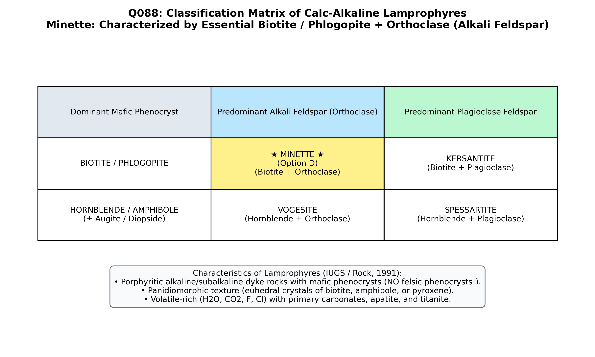

Lamprophyres (from Greek lampros = bright/glistening, and phyro = mixed/porphyritic; von Gümbel, 1874) are a distinctive group of melanocratic, volatile-rich ($H_2O, CO_2, F$) hypabyssal dyke rocks characterized by panidiomorphic texture, in which euhedral phenocrysts of ferromagnesian minerals (biotite/phlogopite, amphibole, or pyroxene) are set in a fine-grained groundmass of feldspars ± feldspathoids. Critically, felsic minerals NEVER form phenocrysts in true lamprophyres.
| Lamprophyre Group | Dominant Mafic Phenocryst | Dominant Groundmass Feldspar | Lamprophyre Rock Name |
|---|---|---|---|
| Calc-Alkaline Lamprophyres (Shoshonitic) | Biotite / Phlogopite | Alkali Feldspar (Orthoclase / Sanidine) | ★ MINETTE ★ (Option D) |
| Biotite / Phlogopite | Plagioclase Feldspar (Oligoclase/Andesine) | Kersantite | |
| Amphibole / Pyroxene-Dominated | Hornblende ± Diopside/Augite | Alkali Feldspar (Orthoclase) | Vogesite |
| Hornblende ± Diopside/Augite | Plagioclase Feldspar | Spessartite | |
| Alkaline Lamprophyres | Titanaugite, Kaersutite, Biotite | Feldspathoids (Nepheline, Analcime) ± Plagioclase | Camptonite, Monchiquite, Sannaite |

By international IUGS classification (Rock, 1991; Le Maitre, 2002; Bangar), minette is the classic type of calc-alkaline lamprophyre containing essential phenocrystic biotite/phlogopite and groundmass alkali feldspar (orthoclase).
Diorite is a coarse-grained plutonic intermediate rock composed of andesine plagioclase and hornblende. It lacks the distinctive porphyritic-panidiomorphic texture and alkali-rich lamprophyric chemistry of minette.
Tonalite is a quartz-rich, plagioclase-dominated plutonic rock ($Q > 20\%$, $P/(A+P) > 90\%$). Minette is a melanocratic dyke rock dominated by K-feldspar and mica, not a quartz-plagioclase pluton.
Aplite is a leucocratic (light-colored), fine-grained, equigranular (saccharoidal) dyke rock dominated by quartz and feldspars ($M' < 5\%$). Minette is melanocratic ($M' > 35\text{--}50\%$), dark, and intensely porphyritic.
| Rock Class | Color Index ($M'$) | Texture | Phenocryst Phase | Groundmass Mineralogy |
|---|---|---|---|---|
| Minette (Lamprophyre) | Melanocratic (35–60%) | Panidiomorphic porphyritic | Biotite / Phlogopite | Orthoclase ± Apatite, Carbonate |
| Kersantite (Lamprophyre) | Melanocratic (35–60%) | Panidiomorphic porphyritic | Biotite / Phlogopite | Plagioclase (Oligoclase/Andesine) |
| Aplite (Option C) | Leucocratic (<5%) | Saccharoidal equigranular | None (Aphyric) | Quartz + Alkali Feldspar |
| Diorite (Option A) | Mesocratic (35–65%) | Phaneritic granular | None (Equigranular) | Andesine + Hornblende |